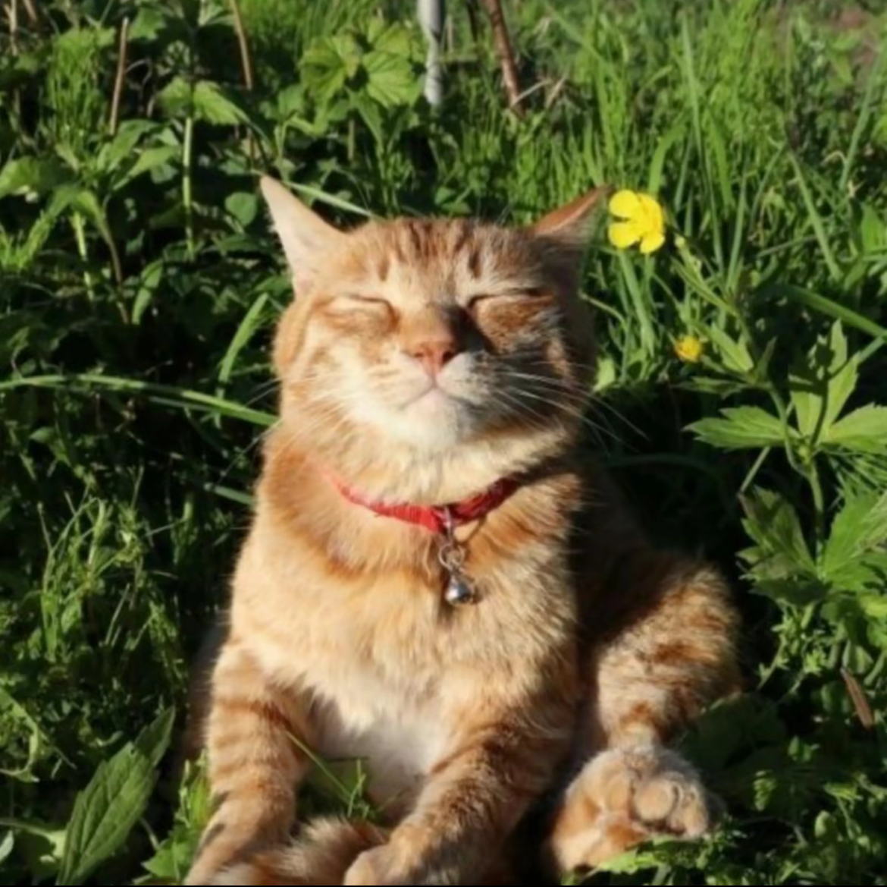

TE AMO
Te amo muchisimo y espero que la vida me permita y me conceda el tiempo
para poder demostrarte cuanto te amo pues siento que las palabras no son suficientes,
este proyecto lo inicie hace un tiempo y lo quise hacer de esta manera pues es algo que me
gusta hacer y por ti, créeme que yo haría cualquier cosa por ti, cualquier cosa para que te
sientas querida por mi. Además no hay cosa que me deje de amarte y si me lo permites quiero
amarte toda la vida si es posible, creo que jamás había querido a una persona de la manera
en la que te quiero a ti. TE AME, TE AMO Y TE AMARÉ.
